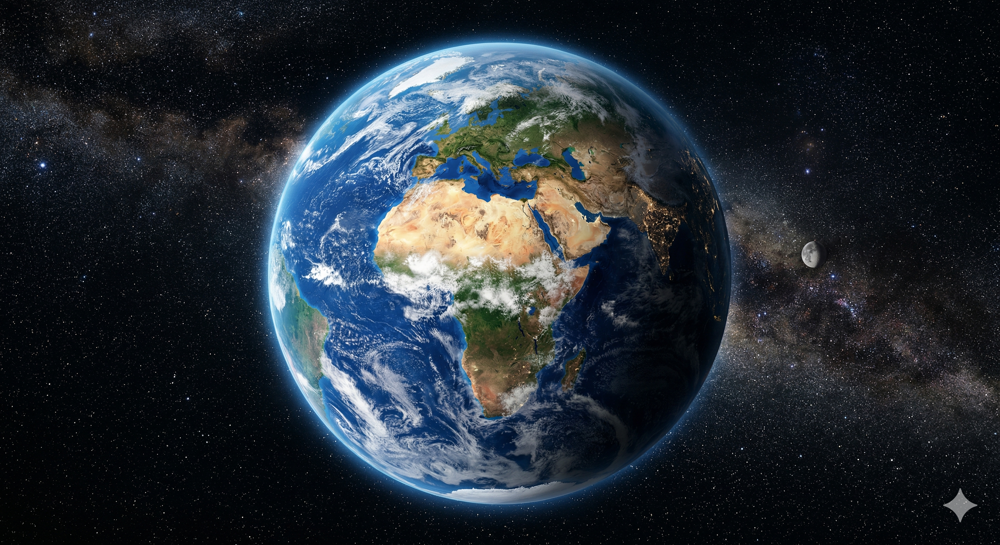
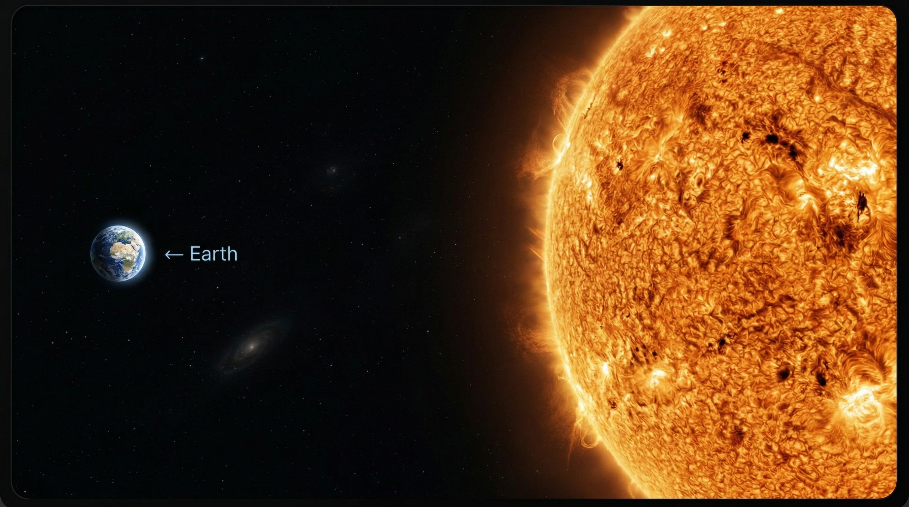
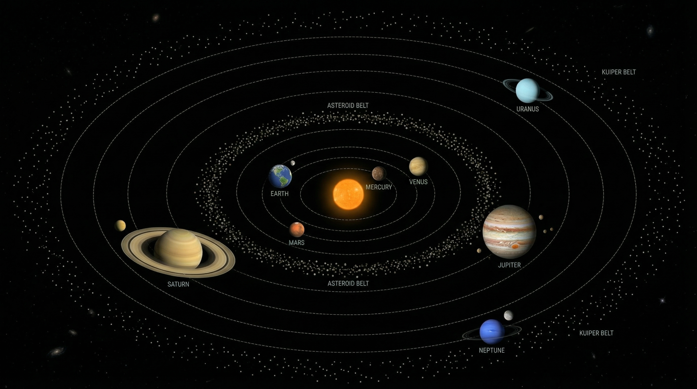
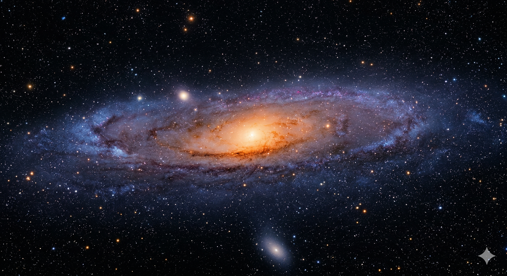
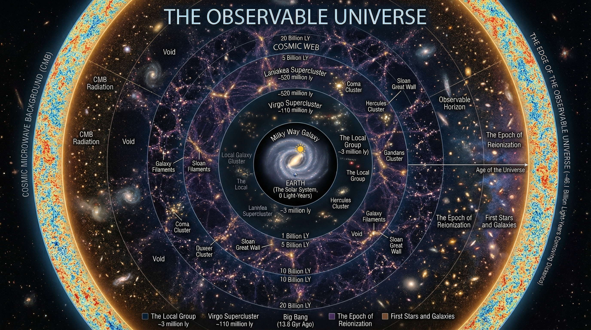

How small are we really? Scroll down to journey from the familiar size of our home planet all the way out to the boundaries of the observable universe.
Our entire world. Every human being who has ever lived, every mountain, every ocean, all fits on this tiny blue marble suspended in a sunbeam.

You could fit over 1 million Earths inside the Sun. Its immense gravity is what holds our entire solar system together.

The Sun is reduced to a mere speck at the center. It takes light from the Sun over 4 hours just to reach Neptune.

Our Solar System is just one among 100 to 400 billion other star systems swirling in this massive, barred spiral galaxy.

The ultimate limit of human perception. It contains roughly 2 trillion galaxies. The Milky Way itself is now invisibly microscopic.
